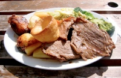
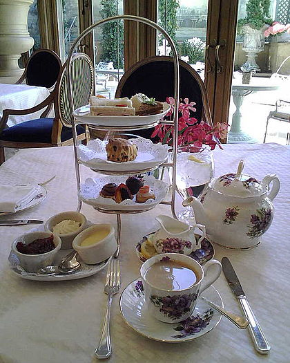
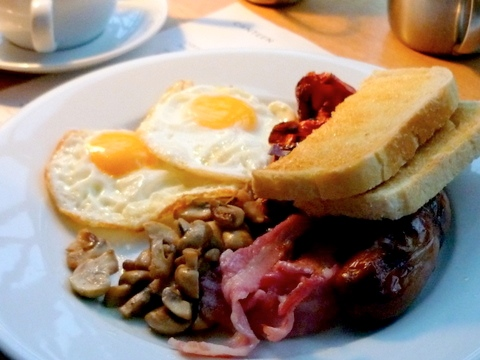

English cuisine encompasses the cooking styles, traditions and recipes associated with England. It has distinctive attributes of its own, but also shares much with wider British cuisine, partly through the importation of ingredients and ideas from North America, China, and India during the time of the British Empire and as a result of post-war immigration.
Traditional meals have ancient origins, such as bread and cheese, roasted and stewed meats, meat and game pies, boiled vegetables and broths, and freshwater and saltwater fish. The 14th-century English cookbook, the Forme of Cury,[a] contains recipes for these, and dates from the royal court of Richard II.
Once, most families in the UK would sit down together for a big roast lunch every Sunday. This doesn’t happen so much now but the Sunday (or any other day of the week) roast is still a very popular meal. Beef, chicken, lamb, pork or, especially at Christmas, turkey is roasted in the oven. It’s served with a selection of vegetables like roast potatoes, carrots, cabbage, roasted onions, Brussels sprouts, peas, as well as tiny sausages wrapped in bacon called ‘pigs in blankets’ and gravy made from the meat juices (‘the trimmings’).
Roast beef is traditionally accompanied with a peppery horseradish sauce, English mustard and Yorkshire pudding (a batter of eggs, flour and milk which rises up in the oven). Roast pork is often served with an apple sauce, while roast lamb tastes delicious with a mint sauce or redcurrant jelly.

No one in the UK would eat this breakfast every day but most people admit to indulging every now again. A ‘fry up’ may consist of fried or grilled bacon, a sausage or two, a fried egg, baked beans (tinned beans in a tomato sauce), grilled or fried tomatoes, a slice of fried bread (or toast), perhaps some slices of fried black pudding (sausage made from pig’s blood), and fried mushrooms – eaten in any combination, with a dollop of either brown sauce or tomato ketchup on the side. Other traditional English breakfasts to try are smoked kippers, scrambled egg on toast, kedgeree (a rice and smoked haddock dish from the days of the British Raj) – or just a bowl of cornflakes and milk.


For more recipes Click on This Link